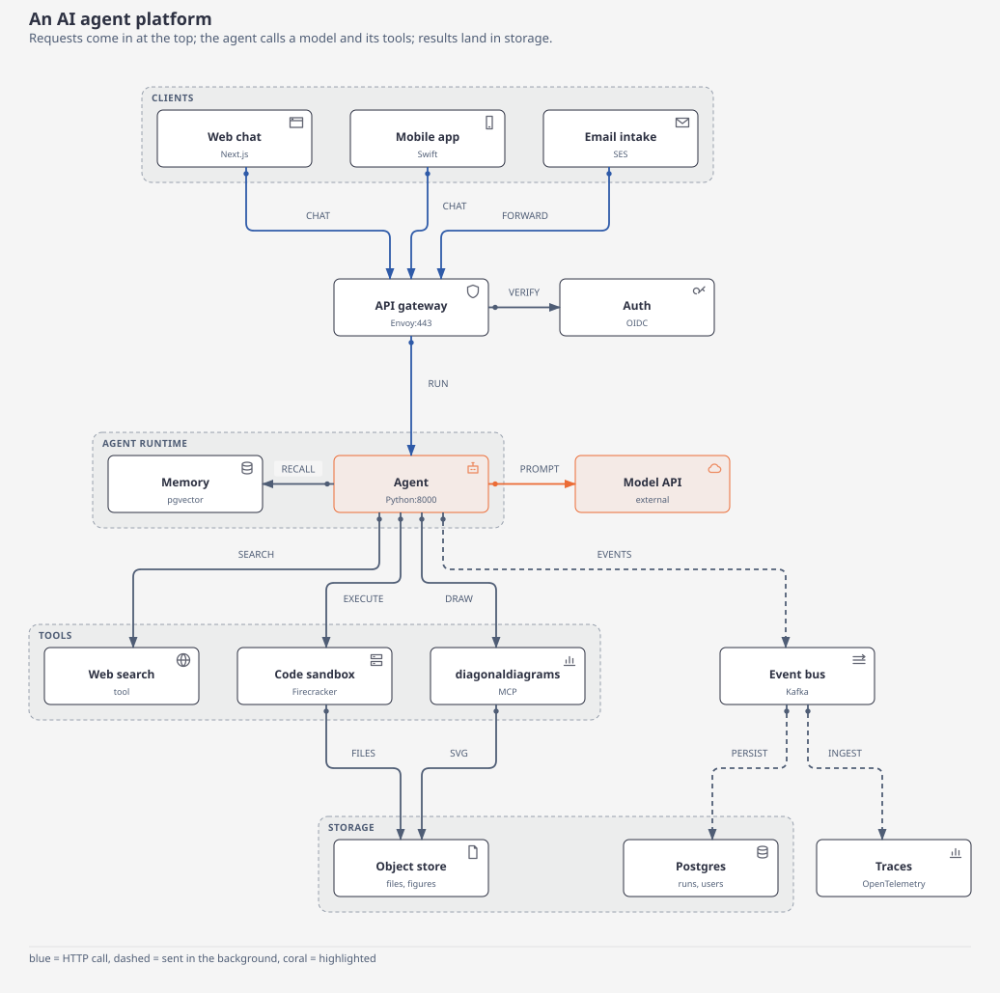
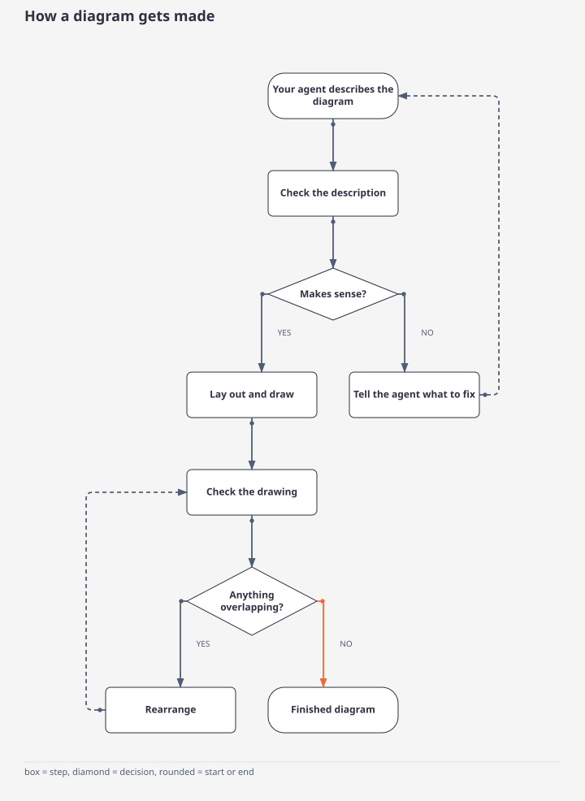
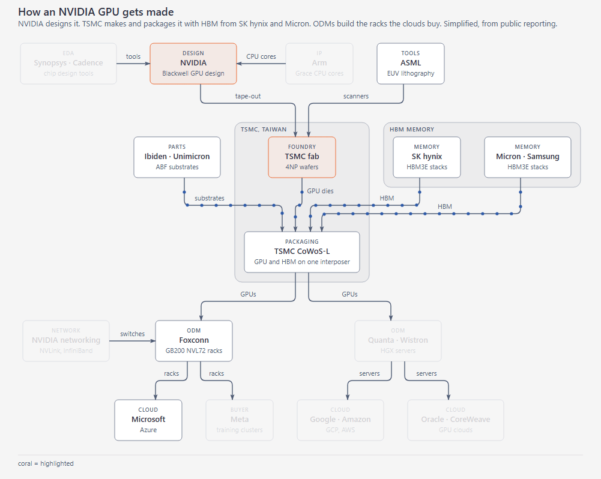
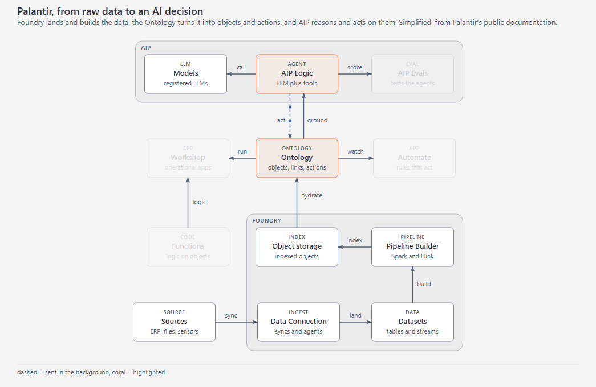
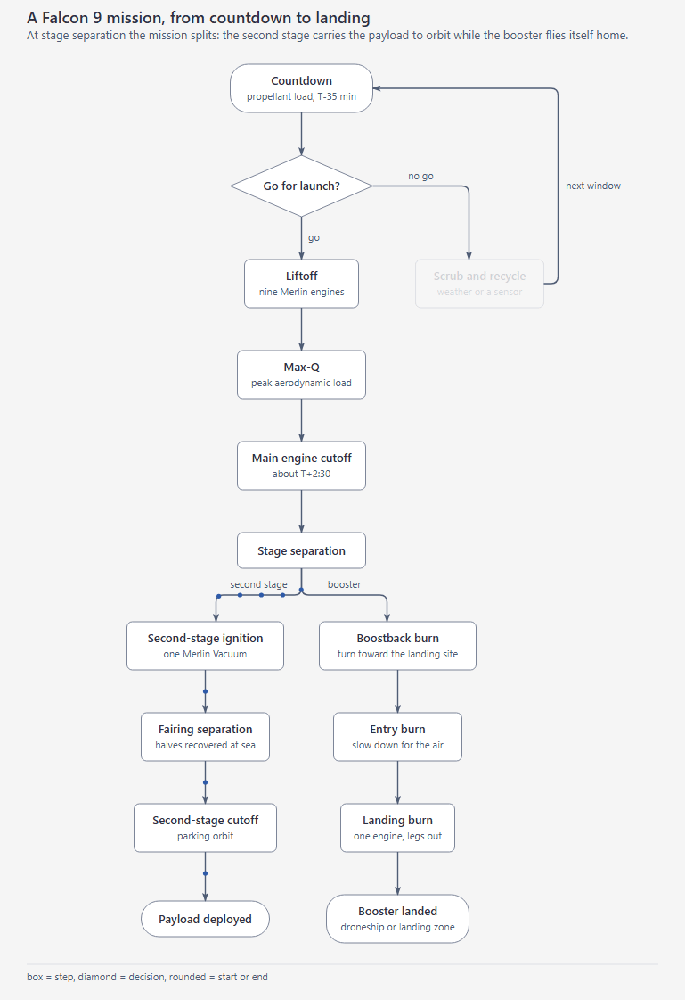

Diagrams your AI agent gets right the first time.
Ask your agent for a flowchart, an architecture diagram, a sequence diagram or a chart. diagonaldiagrams draws it and checks it for overlapping text and tangled arrows, then tells the agent the result in one line.

Checked before you see it
Every drawing is checked for text on text, text spilling out of its box, and arrows running through boxes. Most problems are fixed automatically; the rest go back to your agent with a plain fix.
A verdict, not a screenshot
The agent gets a checked result back. At 40 steps that was 6.4k tokens, against 15.4k with Mermaid CLI. Pele, which models already know, used 6.3k there and the fewest overall. See the results.
Starts from Mermaid
Agents already know how to write Mermaid, so there's nothing new to learn. To edit a diagram by hand, open it in draw.io or Excalidraw.

Three systems
Drawn, checked, and filmed. The specs are in the repository under examples/showcase.



Results
diagonaldiagrams 0.8.0 against Mermaid CLI and Pele, on 2026-10-19. The same four flowcharts, from 5 to 40 steps. Two fresh agents per point.

| All eight flowcharts | Tokens | Calls | Screenshots | Time |
|---|---|---|---|---|
| Pele | 23.9k | 57 | 18 | 5 min |
| diagonaldiagrams | 43.8k | 69 | 9 | 7 min |
| Mermaid CLI | 47.8k | 79 | 32 | 13 min |
Pele spent the fewest tokens, because the model already knows Mermaid and reads no skill. diagonaldiagrams stays flat as the figure grows: 6.4k at 40 steps, where Mermaid CLI reaches 15.4k, most of it screenshots. Every one of the 24 figures passed the audit.


In a README column, after sizing the figure for that column, every flowchart was judged clearer. Architecture written as our own spec won 6 of 8 against Pele and 7 of 8 against Mermaid. The same architecture translated from Mermaid still loses to Pele.
How we tested
- Speed is a fresh process per figure. diagonaldiagrams was remeasured the same day, the median of 7 calls from bytecode. Pele and Mermaid CLI are the earlier run that day.
- Tokens count what the agent wrote, what came back, files it read, and screenshots. The harness and thinking are left out. Two runs per point, and single runs differ by up to 3.5 times.
- Quality is blind: two judges, both orders. The column numbers are the rejudge after
--fit column. - An earlier run on 2026-10-04, 12.7k tokens against Mermaid's 63.9k, used a different prompt and is not comparable.
- The tables, the prompts, and the scripts are in the repository under
bench/.
Try it
Pick an example, or type your own. It runs here in your browser and nothing is uploaded. The first load takes a few seconds.
Gallery
Every figure here was drawn by diagonaldiagrams and passed its own check.
Install
Pick the one that fits your agent. Each needs Python 3.9 or newer.
Claude Code
Adds diagonaldiagrams and the instructions Claude uses to draw with it.
/plugin marketplace add lucas19919/diagonaldiagrams /plugin install diagonaldiagrams@diagonaldiagrams
Any other agent
Installs the diagonaldiagrams command, which your agent can run like any other.
pip install git+https://github.com/lucas19919/diagonaldiagrams
Claude Desktop, Cursor and other MCP apps
After installing the command, add it to your app's MCP servers with this command line:
diagonaldiagrams mcp